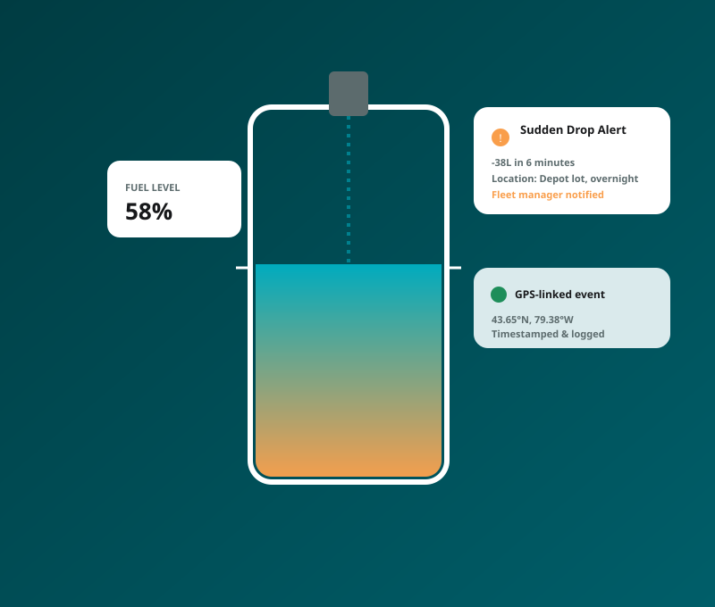

⛽ Fuel Monitoring
Stop Fuel Loss Before It Hits Your Bottom Line
Fuel-level sensing and GPS-linked event tracking to catch theft, monitor consumption and understand true fuel efficiency across your fleet.
Core Capabilities
See Every Fill, Drain and Drop
- Capacitive and compatible fuel-level sensors
- Fuel theft detection
- Filling and draining reports
- Fuel consumption monitoring
- Sudden fuel-drop alerts
- GPS location linked with every fuel event
- BLE or wired sensor connectivity
- Driver and vehicle fuel-efficiency reports
- Integration with fleet dashboards

Sudden fuel-drop alerts, linked to GPS location and time.
Truck Fuel Theft Detection
Catch Fuel Theft Before It Becomes a Pattern
Sudden fuel-drop alerts, tied to precise GPS location and timestamp, help you identify siphoning or unauthorized draining fast — with a documented event trail.
FAQ
Fuel Monitoring Questions
TrackingMe.ca supports capacitive fuel sensors and other compatible sensor types, connected via BLE or a wired interface. Compatibility depends on tank type and vehicle configuration.
Sudden fuel-drop alerts are designed to notify fleet managers promptly after a qualifying drop is detected, subject to sensor and connectivity conditions.
Find Out Where Your Fuel Budget Is Leaking
Request a free fuel monitoring assessment for your fleet.
Request a Fuel Monitoring Assessment